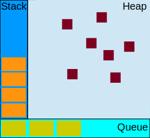

Keep Your Promises
and avoid nasty callbacks
Evan Rutledge Borden
@evanborden
FB/evan.borden
in/eborden


We are going to discuss
Promises and why they are...
- better than callbacks for async tasks
- more readable
- more modular
- more testable
Asynchronous Events
&
Continuation Passing Style
- functional programming
- composition
- partial application
- side effects
- unit testing
- fluent interfaces
- coupling
- finite state machines
- separation of concerns
- the DRY principle
Fat Arrows
Ask Questions
Fat Arrows
Alternate Syntax
function add (x, y) {
return x + y;
}
add = function (x, y) {
return x + y;
};
add = (x, y) => x + y;
add = (x, y) => {
return x + y;
}
constant = x => x;
There Are Other Rules
Asynchronous
If you wish to make an apple pie from scratch, you must first invent the universe.Carl Sagan
Code That Diverges
Async In Javascript
- Ajax
- setTimeout
- Animation
- Web Workers
Hello Async
var x = ‘hello’;
setTimeout(() => {
x = ‘world’;
console.log(x);
}, 100);
console.log(x);
//hello
//world
Threads
C, Java, etc.
Event Loop
Courtesy of Mozilla
Hello Async
var x = ‘hello’;
setTimeout(() => {
x = ‘world’;
console.log(x);
}, 100);
console.log(x);
//hello
//world
Hello Sync
var x = ‘hello’;
console.log(x); //hello
//wait 100ms
sleep(100);
x = ‘world’;
console.log(x); //world
Async Is Hard
Complicated, unpredictable, hard to reason about.
Callbacks
Continuation Passing Style
BYOB
Bring Your Own Behavior
Pass Behavior Via Callback
add = (x, y, callback) => callback(x + y);
add(1, 2, (result) => {
console.log(result);
});
//3
jQuery Ajax
$.get(‘/my-url/’, (result) => {
$(‘body’).html(result);
});
High Order Functions
array.map(x => x + 1)
.filter(x => x > 2);
Why Not Async?
Side Effects & Composition
Side Effects
x = 0;
iterate = () => x++;
iterate(); // 1
// x = 1
Must Affect State
$.get(‘/url/’, (string) => {
string.toUpperCase(); // This is useless and not affecting state
});
$.get(‘/url/’, (string) => {
$(‘.msg’).text(string); // Something useful and affecting state
});
Limiting Side Effects
...decreases the complexity of code.
Encourges Bad Stateful Practice
$.get(‘/sales-history/’, (salesJson) => {
var totalSales = 0;
for (var i = 0, l = salesJson.length; i < l; i++) {
totalSales += salesJson[i].price;
}
//inserts some number
$(‘#total-sales’).text(totalSales);
}, ‘json’);
Very one off
Refactored and DRY
//Reusable functions
property = prop => obj => obj[prop];
sum = a => a.reduce(((acc, x) => acc + x;), 0);
totalSales = json => sum(json.map(property(‘price’)));
$.get(‘/sales-history/’, (salesJson) => {
//inserts some number
$(‘#total-sales’).text(totalSales(salesJson));
}, ‘json’);
Pyramid Of Death
$.get(‘url’, (data) => {
$.get(‘other-url’, data, (otherData) => {
$.get(‘another-url’, otherData, (anotherData) => {
$.get(‘more-url’, anotherData, (moreData) => {
//holy shit finally do something.
});
});
});
});
Parrallel
var state = [],
timer = false,
observe = (state, index) => (data) => state[index] = data,
collectUnfufilled = () => state.filter(x => x == undefined);
$.get(‘url’, observe(state, 0));
$.get(‘other-url’, observe(state, 1));
$.get(‘another-url’, observe(state, 2));
timer = setInterval(function () {
if (!collectUnfulfilled().length && state.length == 4) {
clearInterval(time);
//holy shit finally do something.
}
}, 10),
Async Module
async.parallel([
resolver => {
$.get(‘url’, (data) => {
resolver(null, data);
});
},
resolver => {
$.get(‘other-url’, (otherData) => {
resolver(null, otherData);
});
},
resolver => {
$.get(‘another-url’, (anotherData) => {
resolver(null, anotherData);
});
}
], (errors, results) => {
//do things
});
Composition
Not Composable
Synchronous
salesJson = () => [{price: 12}, {price: 33}, ...];
dot = prop => obj => obj[prop];
sum = a => a.reduce(((acc, x) => acc + x;), 0);
totalSales = json => sum(json.map(dot(‘price’)));
$(‘#total-sales’).html(
totalSales(
salesJson()));
//inserts some number
Not Composable
$(‘#total-sales’).html(
totalSales(
$.get(‘/sales-history/’, ‘json’)));
//Error
Is there a solution?
Promises
Promise
A declaration or assurance that one will do a particular thing or that a particular thing will happen.Oxford English Dictionary
Promises/A
A promise represents the eventual value returned from the single completion of an operation.Common JS Spec
Object
State
Event Queue
States
- unresolved
- resolved
- failure
Passing Behaviour
continuationFunction(x, callback);
promiseFunction(x).then(callback);
And Then?
promise.then(done, fail, progress);
promise.done(callback);
promise.fail(callback);
promise.progress(callback);
promise.always(callback);
Where do Promises come from?
Deferred
deferred.resolve(value); // fires done
deferred.reject(value); // fires fail
deferred.notify(value); // fires progress
deferred.state(); // returns current state: resolved|rejected|pending
deferred.promise(); // returns a promise object linked to the Deferred
Create Promises
promiseAdd = (x, y) => {
var d = $.Deferred();
setTimeout(function () {
d.resolve(x + y);
}, 100);
return d.promise();
}
promiseAdd(1, 2)
.then(result => console.log(result));
// logs 3 after 100ms
Returns A Values
It is composable!
We'll get to that later.
Then
Is The Powerful
Then Returns A Promise
promise = promiseFunction();
newPromise = promise.then(callback);
3 Behaviors
If the callback returns...
- undefined
- a value
- a promise
Chain Functions
$.get(‘/sales-json/’)
.then(totalSales)
.then(total => {
$(‘#total-sales’).html(total);
});
Pass Promises Around
promise = $.get(‘/url/’);
promise.then(doThisOnDone);
promise.then(doThisAtTheSameTime);
Sequence Events
$.get(‘url’)
.then($.get.bind(null, ‘other-url’))
.then($.get.bind(null, ‘another-url’))
.then($.get.bind(null, ‘more-url’))
.then((moreData) => {
// holy shit that is fluent
});
Parallel
$.when
$.when(
$.get(‘url’),
$.get(‘other-url’),
$.get(‘another-url’),
$.get(‘more-url’)
).then(allData => {
var data = allData[0],
otherData = allData[1],
anotherData = allData[2],
moreData = allData[3];
//Wow!
});
$.when Returns A Promise
$.when(
$.get(‘url’),
$.get(‘other-url’),
).then(data => $.when(
$.get(‘another-url’, data[0]),
$.get(‘more-url’, data[1])
)).then(finalData => {
//what elegant synchronization
});
Break Up Large Computation
$.when(‘foo’)
.then(partialComputation)
.then(moreCompuation)
.then(justALittleMore)
.then((data) => {
// Phew! I’m glad we didn’t lock the ui.
});
Test Case
- Slow computation
- We need fast retrieval
- 5 records return quickly
The Solution
//Reusable Functions
var chunk = (size, a) => {
var chunked = [];
for (var i = 0; i < a.length; i += size) {
chunked.push(a.slice(i, i + size));
}
return chunked;
},
promiseGetIDs = (url, idArray) => $.get(url, {ids: idArray});
//One Off Implementation
var idList = [1, 2, 3, 4…],
promises = chunk(5, idList).map(
promiseGetIDs.bind(null, ‘/big-computation/’)
);
$.when.apply(null, promises).then(data => {
//do something with all that data
});
You Can Build It
Review
Async and Continuation Passing
Promises
Error Handling
Rejection Queue
promise.fail(callback);
promise.then(success, fail);
Rejections Bubble
promise.then(callback1)
.then(callback2) // Errors that occur here
.then(callback3)
.then(callback4, errorHandler); // Bubble to here
Thrown Exceptions
try {
promise.then(callback1)
.then(callback2) // Error that occur here
.then(callback3)
.then(callback4, errorHandler); // Bubble to here
} catch (e) {
errorHandler(e);
}
Exception Swallowing
Can Be Dangerous
Silenced Exception
promise.then(callback1)
.then(callback2) // Exception thrown
.then(callback3)
.then(callback4);
Terminating The Chain
promise.then(func1)
.done(); // Not jQuery’s done, this terminates the chain
Garbage Collection
function () {
promise.then(func1)
.then(func2) //Error Thrown
.then(func3)
} //Promise gets garbage collected
//Error thrown
Exception Handling
Not All Promises Are Alike
What is wrong?
async = () => {
var def = when.defer();
setTimeout(() => {
//...does something
def.fulfill(x);
}, 10);
return def.promise();
}
What is wrong?
async = () => {
var def = when.defer();
setTimeout(() => {
throw Error('Bloody hell!');
def.fulfill(x);
}, 10);
return def.promise();
}
Swallow Everything!
async = () => new RSVP.Promise((fulfill, reject) => {
setTimeout(() => {
//do something
throw Error('Bloody hell!');
fulfill(x);
}, 10);
});
Testing
Unit Testing
Jasmine
div = (x, y) => x / y;
describe("div function", () => {
it("divides small from large", () {
expects(div(10, 5)).toBe(2);
});
it("returns decimals for large from small", () {
expects(div(5, 10)).toBe(.5);
});
it("returns Infinity on division by 0", () {
expects(div(10, 0)).toBe(Infinity);
});
//...more test cases
});
Another Done
describe("promise function", () => {
it("returns async", (done) {
promiseFunc().then(data => {
expects(data).toBe(/*...*/);
done();
});
});
});
Separation Of Concerns
Test Computation -- Not Retrieval
describe("Test suite for sales calculation", function() {
salesMock = [{price: 45000}, ...];
it("Total sales returns sum of all sales", function() {
expect(totalSales(salesMock)).toBe(1000000);
});
});
Promises In Node
Node had promises
Standard Library Facades
Promisify
Q.nfbind();
Q.nfcall();
Q.nfapply();
deferred.promisify();
The Future
Of Promises
Promises/A+
Thenable
Important Features
- Progress behavior has been removed
- Asynchronous chaining is gauranteed
- Multiple events on a single promise must be strictly ordered
DOM Promises
promise = new Promise((resolve, reject) => {
resolve('value');
});
ES7 Promises
More Concurrency
Web Workers
JavaScript Threads
Events Listeners and Messages
var w = new Worker(‘my-script.js’);
w.onmessage = e => {
console.log(e.data);
};
w.onerror = e => {
//handle the error
};
w.postMessage(message);
Wrong Paradigm
A promise represents the eventual value returned from the single completion of an operation.
Single Use Workers
One Time Worker
promiseWorker = (script, message) => {
var d = $.Deferred(),
w = new Worker(script);
w.onmessage = e => d.resolve(e.data);
w.onerror = e => d.reject(e);
d.always(() => w.terminate());
w.postMessage(message);
return d.promise();
}
//One use worker
promiseWorker('foo.js', ['data', 'set', 'for', 'worker'])
.then(data => console.log(data));